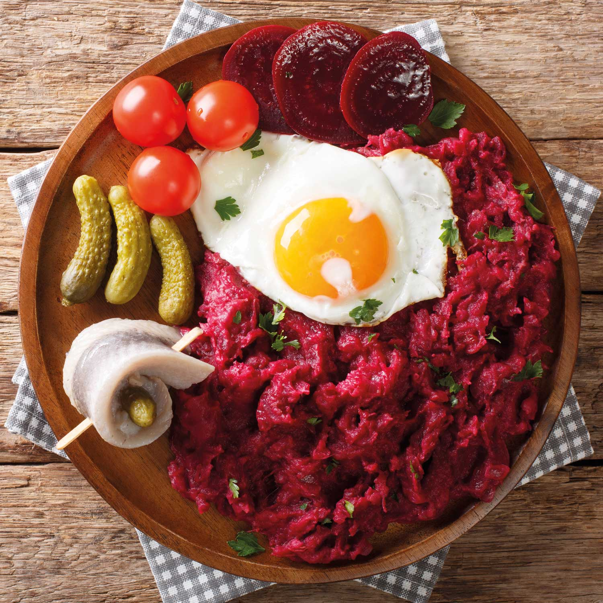

Labskaus
back to overview

Description
This dish is a northern german classic and specialty. Also lovingly called "Moppelkotze" in the local tongue it doesnt necessarily look like something one would eat but certainly already stepped into on the way home after a long alcohol infused night. Although it is not the most visually pleasing dish its heartiness and rich flavour makes it a favourite of many a northern german person.
Ingredients
- 350g fresh red beet
- 800g potatoes
- salt and pepper, to taste
- 150g onions
- 50g butter
- 200g corned beef
- 50ml beef broth
- 2 table spoons gherkin water
- 4 gherkin
- 4 rolled pickled herring
Steps
- Wash the red beet and cook, depending on the size, 30 to 60 minutes until soft. Meanwhile wash the potatos and cook until soft as well. After cooking refresh both with cool water and let cool. Afterwards peel both. It is advised to use disposable gloves for the red beet.
- Peel the onions and dice them finely. Afterwards sauté in a big pan.
- Add the corned beef to the onions and let it simmer for about 2 minutes.
- Blend about 3,5 of the red beet until they are a paste and mix in with the beef and onions.
- Add the broth and gherkin water and let it come to a boil.
- Press the potatos through a potato ricer and add to the mix.
- Cook until creamy under constant stirring.
- Season to taste with salt and pepper.
- Slice the leftover red beet and serve with halved gherkin, the rolled herring and the Labskaus on a preheated plate.